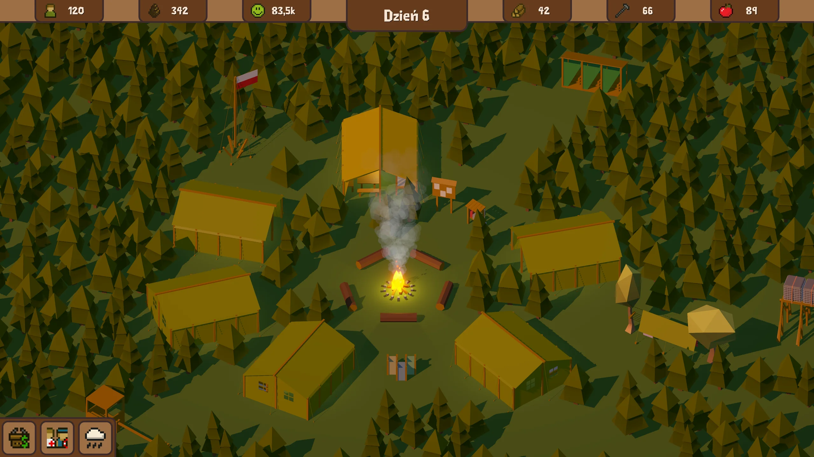
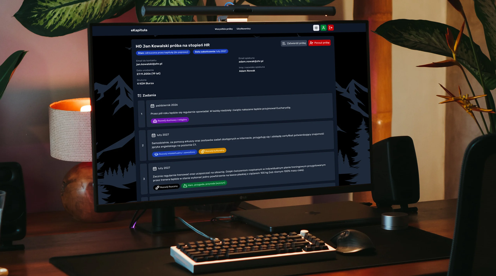
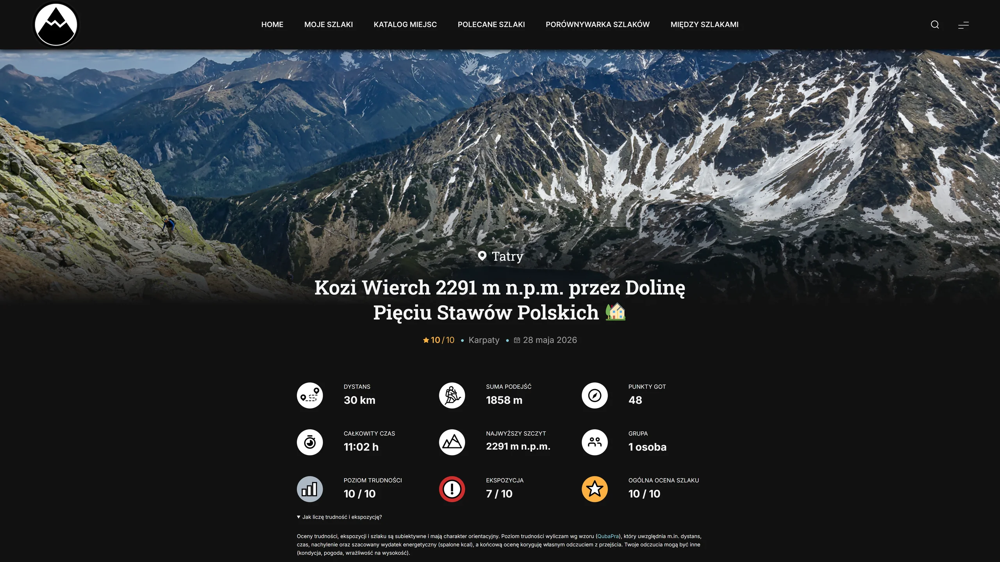
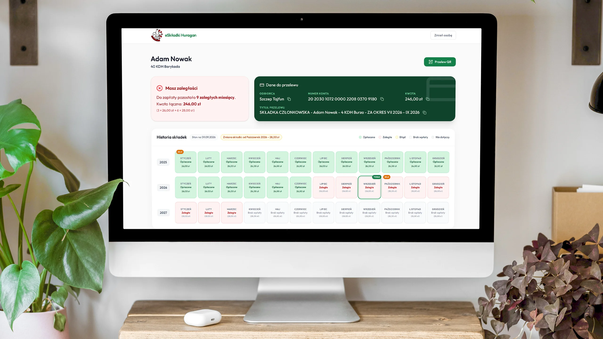
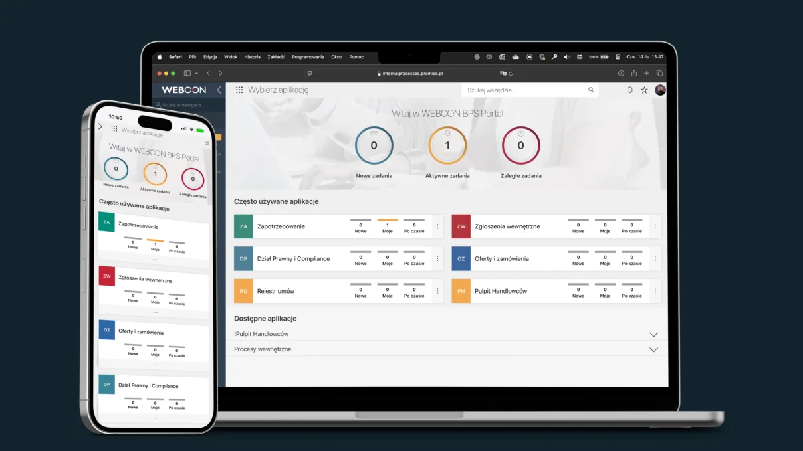

QUBA
Fullstack Developer • AGH Kraków
„Od backendu po światy 3D. Tworzę wydajne rozwiązania z dbałością o detale.”
Łączę analityczny umysł programisty z kreatywnością. Moje portfolio to przekrój kompetencji: inżynieria serwerowa, machine learning, architektura baz danych oraz gamedev i projektowanie UI.
Nie lubię zamykać się w jednej technologii – potrafię płynnie przejść od optymalizacji zapytań SQL, przez trenowanie modeli w PyTorch, aż po tworzenie logiki w Unity czy Unreal Engine. Mam za sobą rok komercyjnych praktyk oraz lata realizacji autorskich systemów, które do dziś obsługują setki użytkowników.
Szukam elastycznego środowiska, w którym będę mógł wykorzystać moją interdyscyplinarną wiedzę do rozwiązywania nieszablonowych problemów.
Projekty
Dedykowane wdrożenia komercyjne, platformy organizacyjne oraz autorskie eksperymenty ze sztuczną inteligencją i grafiką czasu rzeczywistego.





Kompetencje
Szeroki profil inżynierski: od architektury baz danych i backendu, po projektowanie interfejsów i interakcji czasu rzeczywistego.
Inżynieria Serwerowa
Projektowanie i zabezpieczanie interfejsów API, relacyjne bazy danych, automatyzacja procesów i obieg dokumentów.
Uczenie Maszynowe
Eksploracja danych, trenowanie modeli predykcyjnych, wizualizacja i generowanie raportów statystycznych.
Interaktywne UI
Responsywne i nowoczesne strony internetowe, badanie doświadczeń użytkowników i prototypowanie makiet w Figmie.
Światy Wirtualne
Budowanie gier wideo, level design, modelowanie 3D i montaż filmów.
Zróbmy razem
Coś ciekawego
Szukam pracy w obszarze IT, najchętniej w Krakowie lub zdalnie. Jeśli szukasz osoby ambitnej z szerokimi kompetencjami do swojego zespołu - zapraszam do kontaktu.